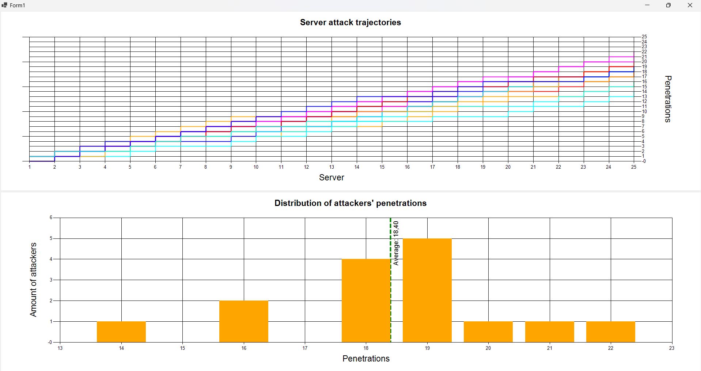

In statistics, understanding basic concepts is essential for proper data collection, analysis, and interpretation. Below are detailed definitions of population, statistical unit, and distribution.
A population is the complete set of all possible observations or elements that meet a certain criterion, and about which we aim to draw conclusions. Populations can vary in size and may be finite or infinite, they can represent something real or imaginary, they can be static or dynamic (like a stream of data). In practical terms, a population might refer to all individuals within a certain country, all manufactured products from a factory, or all possible outcomes of a repeated experiment.
For example, in a study aimed at understanding the income of citizens in a country, the population would consist of every individual earning an income within that country. When a population is too large or impractical to analyze entirely, samples are drawn to make inferences about the population's characteristics, using statistical methods.
A statistical unit is the basic entity or object about which data is collected and observations are made. It represents the smallest individual component of the population under study. The statistical unit can be an individual person, household, organization, event, or any entity that is measurable.
For instance, in a demographic survey, the statistical unit could be a single person, while in an industrial quality control study, it might be an individual product item. It is important that the definition of the statistical unit is consistent across the study to ensure accurate data collection and analysis.
As a result of the observation, the researchers obtain an array of characters (or phenomena) (X1, X2, ..., Xn) for each statistical unit. These characters can be named variables if they are measurable with a set of all possible values that are allowed.
A distribution describes how values of a particular variable are spread across possible outcomes or intervals. It provides a mathematical function or graphical representation showing the frequency or probability of various outcomes occurring. In other words, the statistical distribution shows which values are common and uncommon.
Distributions can be discrete, where the variable takes on a countable number of values (e.g., the number of heads in a series of coin flips), or continuous, where the variable can take any value within a range (e.g., the weight of newborns). Common types of distributions include:
The average, or arithmetic mean, is one of the most fundamental concepts in statistics. It is used to summarize a set of data by calculating the central value, which represents the "typical" value in the dataset. The arithmetic mean is computed by summing all values in the dataset and dividing by the number of values. The formula for the arithmetic mean is given by:
Arithmetic Mean (μ) = (x₁ + x₂ + ... + xₙ) / n
where x₁, x₂, ..., xₙ are the individual data points, and n is the number of data points. The mean is highly sensitive to outliers, and extreme values can distort the average, leading to potential misinterpretations of the data.
While calculating the average might seem straightforward, there are several computational challenges when working with floating-point representation in computers. These challenges arise from the fact that floating-point numbers are only an approximation of real numbers, and this can introduce several types of errors.
Numerical stability refers to how errors in calculations propagate through an algorithm. A numerically stable algorithm produces results with minimal error, even when rounding errors or small perturbations in the input data occur. In the context of floating-point arithmetic, numerical stability is crucial because even small rounding errors can accumulate over many operations, leading to significant inaccuracies.
For example, summing a large number of floating-point numbers can introduce cumulative errors due to rounding at each step of the summation. Algorithms that are numerically unstable may produce large errors that grow exponentially with the number of operations performed.
Floating-point numbers represent real numbers with a finite number of binary digits, which limits the precision. This leads to two main types of errors:
Rounding errors can accumulate over multiple operations, leading to a gradual degradation in precision. In the worst-case scenario, this can cause a significant loss of accuracy, especially in iterative processes where errors compound at each step.
Catastrophic cancellation occurs when subtracting two nearly equal floating-point numbers. This results in a significant loss of precision because the most significant digits cancel out, leaving only the less precise, smaller digits. The difference between the two numbers is much smaller than the original numbers themselves, but the floating-point representation limits the precision of this difference, leading to a large relative error.
For example, if two numbers like 1.0000001 and 1.0000000 are subtracted, the resulting difference is 0.0000001. However, the floating-point representation may only store a few significant digits, which can result in a loss of information and significant rounding errors. Catastrophic cancellation is particularly problematic in calculations involving the difference of nearly equal numbers.
There are various numerical methods designed to reduce the impact of floating-point errors and improve computational accuracy. Two notable methods include the Kahan's Algorithm, which compensates for floating-point rounding errors, and recursive formulas for efficiently updating calculations like the mean in real-time.
The Kahan Summation Algorithm, proposed by computer scientist William Kahan, is a technique to improve the accuracy of floating-point summation by compensating for rounding errors. This algorithm keeps track of the small errors introduced during each addition step, preventing them from accumulating and significantly affecting the final result.
The algorithm works by maintaining a separate compensation variable that records the rounding errors. When a floating-point operation introduces an error, this small error is added to the compensation variable. On subsequent operations, this compensation is used to correct the total sum, effectively reducing the error at each step and ensuring a more accurate result over many iterations.
An alternative method for calculating the mean, especially useful for streaming data or when working with large datasets, is the use of a recursive formula, also discussed by Donald Knuth, in particular in his book "The Art of Computer Programming". Instead of summing all the data at once, this formula updates the mean incrementally as each new data point is added. The recursive formula for the mean is given by:
μₙ = μₙ₋₁ + (xₙ - μₙ₋₁) / n
Where:
This recursive approach reduces the need to store all data points in memory, making it particularly useful in real-time applications or when dealing with very large datasets where memory and computational efficiency are concerns. It allows for efficient and dynamic updates to the mean with each new data point.
The task involves simulating an attack on n servers by m attackers, where each attacker has a probability p of successfully penetrating a server. The goal is to graphically represent the outcomes for each server over time. A line stays flat if an attacker doesn't penetrate the server, and it jumps to 1 if the penetration is successful. At the end of the simulation, a histogram is drawn, showing the distribution of attackers based on the number of successful penetrations.
The first step is setting up the variables n, m, and p. The program initializes the servers and attackers, the penetration probability and the array containing the final number of penetrations of each attacker, then we create two charts (one for the attackers' trajectories and one for the penetrations distribution).
In this section, the code simulates the attack for each attacker on each server, determining if the penetration is successful based on the probability p.
Once the simulation is complete, the next step is to count the distribution of penetrations made by the attackers. The results are represented in the second chart.
A recursive function is used to calculate the average number of servers penetrated by all attackers. Then the result is shown in the second chart with a dashed green line.
The screenshot below shows the output of the realized program, using the parameters n = 25 for the number of servers, m = 15 for the number of attackers, and p = 0.7 for the probability of successful penetrations.
